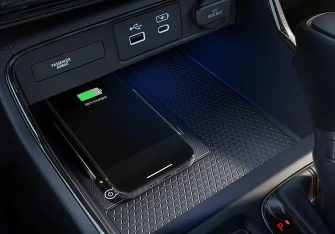
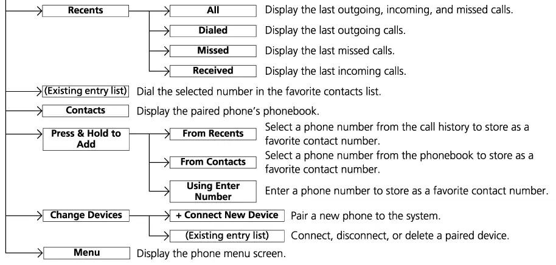
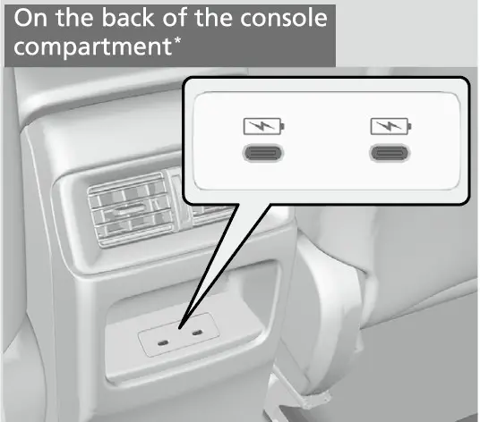

קאפיטל 8
פארבינדן דעם גוגל פיקסל 9a
זייטן 135–146 אינעם PDF
צוויי וועגן צו פארבינדן: Android Auto און Bluetooth HandsFreeLink
אייער Pixel 9a קען רעדן מיט דעם CR-V אויף צוויי גאר אנדערע וועגן, און עס איז גוט צו האלטן זיי אפגעטיילט פון ערשטן טאג. דער ערשטער וועג איז Android Auto (דער טעלעפאן אויפן קאר-סקרין). Honda'ס אפיציעלע ספעציפיקאציעס שרייבן אז ווייערלעס Android Auto איז סטאנדארט אויפן EX; פאר 2026 איז עס געווארן סטאנדארט אויף יעדע טרים, צוזאמען מיט דעם 9-אינטש טאטש-סקרין און דעם ווייערלעס טשארדזשער. Android Auto ווייזט א פארפשוטע ווערסיע פון אייער טעלעפאן אויפן 9-אינטש טאטש-סקרין. לויט Google'ס הילף-בלעטער קען מען דערמיט קאנטראלירן נאוויגאציע, מאפעס, רופן, טעקסט מעסעדזשעס און מוזיק, און מען קען רעדן מיט Google Assistant (דער קול-געהילף פון Google). דער טעלעפאן טוט דאס טראכטן. דעם קאר'ס סקרין, ספיקערס און מייקראפאן טוען דאס ווייזן, שפילן און הערן.
דער צווייטער וועג איז פשוט Bluetooth, וואס Honda רופט HandsFreeLink, אדער HFL (רעדן אן הענט). דער אונער'ס מאנואל באשרייבט HFL אלס א וועג צו רופן און באקומען טעלעפאן-רופן דורך דעם קאר'ס אודיא סיסטעם, אן אנרירן דעם טעלעפאן. דער קאר קען אויך שפילן Bluetooth Audio (מוזיק דורך Bluetooth), דאס הייסט מוזיק וואס קומט פונעם טעלעפאן. מיט פשוטן Bluetooth ניצט איר Honda'ס אייגענע טעלעפאן-סקרינס און מעניוס. איר באקומט נישט Google Maps אויפן גרויסן סקרין, און איר באקומט נישט דעם Android Auto אויסשטעל. טראכט דערפון ווי דער פשוטערער רעזערוו-וועג.
Android Auto קעגן Bluetooth HFL אויפן EX
| פונקציע | Android Auto | Bluetooth HFL / Audio |
|---|---|---|
| נאוויגאציע אויפן סקרין | Google Maps און פאסיגע עפּס | נישט פאראן |
| רופן | דורך Android Auto | דורך Honda טעלעפאן-סקרינס |
| מעסעדזשעס | מיטן קול דורך Android Auto | SMS פונקציע ליסטעט ביי Honda |
| מוזיק | אייער טעלעפאן'ס מוזיק עפּס | Bluetooth Audio מקור |
| קול-קאנטראל | Google Assistant דורכן talk קנעפל | נישט באהאנדלט אין דעם קאפיטל |
דער כלל וואס צעמישט אסאך אונערס
דער מאנואל זאגט אז ווען אייער טעלעפאן איז פארבונדן מיט Android Auto, קענט איר נישט ניצן Bluetooth Audio אדער Bluetooth HandsFreeLink פון יענעם טעלעפאן. דער מאנואל שרייבט אויך אז Bluetooth A2DP (דער פראפיל פאר שטראמענדיקע מוזיק) קען מען נישט ניצן בשעת דער טעלעפאן איז פארבונדן מיט Android Auto. Android Auto נעמט אליין איבער די רופן און די מוזיק. דעריבער, בשעת Android Auto לויפט, וועט איר נישט געפינען אייער Pixel אונטער Honda'ס Bluetooth Audio מקור. דאס איז נארמאל. אבער אנדערע טעלעפאנען וואס זענען שוין פריער געווען פארבונדן קענען נאך אלץ שפילן מוזיק דורך Bluetooth בשעת Android Auto איז פארבונדן.
דער מאנואל זאגט אויך אז Apple CarPlay און Android Auto קענען נישט לויפן אויף איינמאל. פאר א Pixel אונער מאכט דאס זעלטן אויס, סיידן א פאסאזשיר מיט אן iPhone פארט מיט, און יענער טעלעפאן פארבינדט זיך ערשט.
וואס דער טעלעפאן דארף
די פאלגנדע פרטים וועגן דעם Pixel 9a קומען פון Android Central, א צווייטיקע טעכנאלאגיע-צייטשריפט, נישט פון Google'ס אייגענעם ספעציפיקאציע-בלאט. לויט יענעם מקור קומט דער Pixel 9a מיט Android 15, האט Wi-Fi 6E, א 5,100 mAh באטעריע, 23-וואט טשארדזשן מיט א קאבל, און Qi ווייערלעס טשארדזשן (Android Central'ס טעקסט גיט די ווייערלעס שנעלקייט אלס 7.5 וואט). דער טעלעפאן טשארדזשט זיך דורך א USB-C פארט. Wi-Fi 6E איז א Wi-Fi סטאנדארט וואס ארבעט, צווישן אנדערע, אויף דעם 5 GHz באנד. אויב איר דארפט אמאל באשטעטיגן א פרט וועגן דעם טעלעפאן, פרעגט גלייך ביי Google.
באדינגונגען פאר ווייערלעס Android Auto קעגן Pixel 9a
| באדינגונג (מקור) | Pixel 9a (לויט Android Central) |
|---|---|
| Android 11 אדער העכער (Google) | Android 15 |
| 5 GHz Wi-Fi שטיצע (Google) | Wi-Fi 6E |
| אקטיווע מאביל-פארבינדונג און דאטא פלאן (Google, Honda) | הענגט אפ אין אייער קעריער פלאן |
| באזונדערע עפ ּאראפלאדן | נישט נויטיג (נאר Android 9 אדער פריער) |
Google'ס הילף-בלאט ליסטעט א פאסיגן Android טעלעפאן מיט אן אקטיוון דאטא פלאן און 5 GHz Wi-Fi שטיצע, און זאגט אז ווייערלעס פראיעקציע ארבעט מיט יעדן טעלעפאן מיט Android 11 אדער העכער, דעריבער איז Android 15 גוט העכער דערפון. דער אונער'ס מאנואל לייגט צו אז Android Auto דארף אן אקטיווע מאביל-פארבינדונג, און אז אייער קעריער'ס פרייזן גילטן. Google באטאנט אז Android Auto איז שוין אריינגעבויט אינעם טעלעפאן; מען דארף נישט אראפלאדן קיין באזונדערע עפ. ּדער מאנואל דערמאנט אראפלאדן פון Google Play נאר פאר Android 9 (Pie) אדער פריער. Google שרייבט אויך אז Android Auto איז נישט פאראן אויף טעלעפאנען מיט Android Go edition, און אז רוב פונקציעס וועלן נישט ארבעטן אויסער די לענדער וואס Google ליסטעט, צווישן זיי די פאראייניגטע שטאטן און קאנאדע.
ווי די ווייערלעס פארבינדונג ארבעט
ווייערלעס Android Auto ניצט צוויי ראדיאס צוזאמען. Bluetooth מאכט דעם ערשטן "האנט-שאקל" און טראגט די טעלעפאן-פארבינדונג. דאס בילד און דער קלאנג פארן דערנאך איבער א דירעקטע Wi-Fi פארבינדונג צווישן דעם טעלעפאן און דעם קאר. דעריבער בעט Google אז איר זאלט האלטן Bluetooth, Wi-Fi און Location Services (לאקאציע סערוויסעס) אנגעצונדן ביים איינשטעלן. איר דארפט זיך נישט אנשליסן צו קיין Wi-Fi נעץ אינדערהיים אדער אין גאס; דער טעלעפאן און דער קאר מאכן זייער אייגענע פריוואטע פארבינדונג. דער מאנואל רעקאמענדירט אויך צו אפדעיטן Android צו דער לעצטער ווערסיע ווען מען ניצט Android Auto.
ערשטע ווייערלעס איינשטעלונג, שריט נאך שריט
טוט דאס איינמאל, רואיג, בשעת דער קאר שטייט. Google'ס הילף-בלאט זאגט צו מאכן זיכער אז דער קאר איז אין Park מיטן אינפאטעינמענט סיסטעם אנגעצונדן, און צו לאזן צייט איידער מען הייבט אן פארן. דער מאנואל איז מסכים: פארקירט אין א זיכער ארט איידער איר פארבינדט צו Android Auto און איידער איר עפנט פאסיגע עפּס. מען קען נישט פערן א טעלעפאן בשעת דער קאר פארט, און דער סיסטעם ארבעט נאר ווען דער power mode (קראפט-מאדָע) איז אין ACCESSORY אדער ON.
אויפן קאר איז דער מאנואל'ס סדר: Home קנעפל, Android Auto אייקאן, Connect New Device (פארבינדן א נייע מכשיר). דער קאר הייבט דאן אן צו פערן אייער טעלעפאן מיטן Bluetooth HandsFreeLink סיסטעם. מיט אנדערע ווערטער, ווייערלעס Android Auto הייבט זיך אן מיט א געווענליכן Bluetooth פערינג, און ערשט דערנאך גייט מען ווייטער צו Android Auto. דער היים-סקרין אליין ווערט באהאנדלט אין קאפיטל 7.
פערן דעם Pixel 9a פאר ווייערלעס Android Auto
- ווען דער קאר שטייט און דער power mode איז אין ACCESSORY אדער ON, צינדט אן Bluetooth, Wi-Fi און Location אויפן Pixel.
- אויפן Pixel, עפנט Settings און גייט צום Bluetooth מעניו, אזוי אז דער טעלעפאן איז אין זוך-מאדָע (discoverable).
- אויפן קאר, דריקט דעם Home קנעפל, קלייבט אויס דעם Android Auto אייקאן, דערנאך קלייבט Connect New Device.
- קלייבט Search for Devices (זוכן מכשירים); דער קאר זוכט און ווייזט טעלעפאנען אין דער נאענט.
- קלייבט אייער Pixel ווען ער באווייזט זיך. אויב ער באווייזט זיך נישט, זוכט אנשטאט דעם פונעם טעלעפאן, און קוקט פאר דעם קאר'ס נאמען אין דעם טעלעפאן'ס Bluetooth ליסטע.
- קוקט אז דער פערינג קאוד אויפן קאר-סקרין שטימט מיטן קאוד אויפן טעלעפאן (דער מאנואל שרייבט אז דאס קען זיך טוישן לויטן טעלעפאן), דערנאך קלייבט Yes אויפן קאר און נעמט אן דעם פערינג אויפן טעלעפאן.
- ווען דער קאר פרעגט צי ווייטער גיין מיט Android Auto, קלייבט Yes.
- אויב דער טעלעפאן פרעגט פאר ערלויבעניש אנצונעמען אן Android Auto פארבינדונג, נעמט עס אן.
- לאזט דעם טעלעפאן אפדעיטן Android Auto אויב ער פרעגט, און ערלויבט אים צו טיילן קאנטאקטן און רוף-היסטאריע מיטן קאר.
- ווארט עטליכע סעקונדעס ביז Android Auto הייבט זיך אן; אויב נישט, טאפט אויפן Android Auto אייקאן אויפן קאר-סקרין.
דאס ערשטע מאל וואס Android Auto עפנט זיך, נעמט עטליכע מינוט זיך באקאנט צו מאכן מיטן אויסשטעל איידער איר פארט. דער מאנואל רעקאמענדירט צו ענדיגן דעם טוטאריאל (לערן-גאנג) בשעת מען שטייט זיכער. די סקרינס קענען זיין אנדערש לויט דער Android Auto ווערסיע, ווייל Google אפדעיט עס פון צייט צו צייט.
נאך א פונקט פונעם מאנואל: ווי Google באהאנדלט די באניצער- און קאר-אינפארמאציע וואס Android Auto שיקט, ווערט געפירט לויט Google'ס פריוואטקייט פאליסי. Honda'ס לעגאלער בלאט זאגט אז די אינפארמאציע נעמט אריין זאכן ווי דעם קאר'ס לאקאציע, גיכקייט און מצב. די איינשטעלונג איז יעצט פארטיג.
Android Auto מיט א קאבל און די USB פארטס
מען קען אויך לויפן Android Auto דורך א קאבל, וואס איז באקוועם ווען די ווייערלעס פארבינדונג פירט זיך נישט שיין, אדער ווען איר ווילט א שטענדיגן טשארדזש. Honda'ס 2026 ספעציפיקאציע-טאבעלע ליסטעט איין USB-C דאטא פארט פארנט (דער smartphone/audio interface), און דער מאנואל זאגט אז דער פארט איז פאר טשארדזשן, שפילן אודיא פיילס, און פארבינדן טעלעפאנען מיט Android Auto. דער EX האט אויך א צווייטן פארנטיגן USB-C פארט, אבער דער מאנואל זאגט אז ער איז נאר פאר טשארדזשן; מען קען פון אים נישט שפילן מוזיק אדער לויפן Android Auto. די צוויי הינטערשטע USB-C פארטס אויף דער הינטערשטער זייט פונעם קאנסאל-קעסטל זענען אויך נאר פאר טשארדזשן.
EX USB פארטס
| ארט | טשארדזשן | מוזיק / Android Auto |
|---|---|---|
| פארנטיגער דאטא פארט (x1) | יא | יא |
| פארנטיגער טשארדזש פארט (x1) | יא | ניין |
| הינטן, הינטער'ן קאנסאל (x2) | יא , ביז 3.0A | ניין |
דער מאנואל'ס טשארדזש-צוגאב זאגט אז די פארטס אויפן פארנטיגן פאנעל שטיצן USB Power Delivery און Programmable Power Supply, 5.0(PPS ביז 21 V, מאקסימום 60 W). די הינטערשטע פארטס גיבן ביז 3.0A, אבער נאר ווען דאס מכשיר בעט עס.
פארנטיגע USB Power Delivery קראפט (מאנואל)
| קראפט-מדרגה | איין פארט אין באנוץ | ביידע פארטס אין באנוץ |
|---|---|---|
| 5 V | 3A (15 W) | 3A (15 W) |
| 9 V | 3A (27 W) | 3A (27 W) |
| 15 V | 3A (45 W) | נישט ליסטעט |
| 20 V | 3A (60 W) | 2.25A (45 W) |
| סך הכל | 60 W | מאקסימום 60 W צוזאמען |
דער קאבל איז וויכטיג
דער מאנואל זאגט אז USB קאבלען דארפן זיין צערטיפיצירט דורך USB-IF, דער USB Implementers Forum, אז זיי פאסן צום USB 2.0 סטאנדארט. Google לייגט צו פראקטישע עצות: ניצט א קאבל קירצער פון 3 פיס (1 מעטער), און ניצט נישט קיין hubs אדער פארלענגערונג-קאבלען. פרובירט דעם קאבל וואס איז געקומען מיטן טעלעפאן; Google זאגט אז א Pixel קאבל זאל גוט ארבעטן מיט א Pixel. קאבלען פון אנדערע פירמעס קענען זיין גוט אויב זיי פאסן צו די USB-IF סטאנדארטן, און Google רעקאמענדירט צו קוקן אז דער קאבל איז צערטיפיצירט געווארן אין די לעצטע צוויי יאר. אן אויסגעניצטער קאבל איז די מערסט געווענליכע סיבה פאר פלוצלינגע איבעררייסונגען, דעריבער טוישט אים ערשט.

פארבינדן Android Auto מיט א קאבל
- פארקירט זיכער, מיטן power mode אין ACCESSORY אדער ON.
- שטעקט אריין דעם Pixel אינעם פארנטיגן דאטא פארט מיט א קורצן, צערטיפיצירטן קאבל.
- ווען דער באשטעטיגונג-סקרין באווייזט זיך, קלייבט Yes. קלייבט No אויב איר ווילט נאר טשארדזשן.
- פאלגט די אנווייזונגען אויפן Pixel; דאס ערשטע מאל וואס Android Auto דערקענט דעם טעלעפאן, מוז מען אים איינשטעלן פאר auto pairing (אויטאמאטישן פערינג).
- דערנאך קען זיך דער טעלעפאן דאס נעקסטע מאל פארבינדן אן א קאבל.
דער מאנואל בעט אויך נישט צו לאזן USB fal sh drives (קליינע זכרון-שטעקלעך) אינעם קאר, ווייל דירעקטע זון און הויכע היץ קענען זיי קאליע מאכן, און נישט צו פארבינדן card readers אדער hard drives.
Android Auto אין טאג-טעגליכן באנוץ
ווען Android Auto לויפט, ווייזט דער סקרין אייער טעלעפאן'ס פאסיגע עפּס. Google Maps באהאנדלט די נאוויגאציע, און דאס איז וויכטיג אויפן EX, וואס האט נישט קיין אריינגעבויטע נאוויגאציע: Maps דורך Android Auto איז אייער וועגווייזער. דער מאנואל זאגט אז די עפּס וואס ווערן געוויזן קען מען טוישן פונעם סמארטפאון, און עפּס פון אנדערע פירמעס ארבעטן אויב זיי פאסן צו Android Auto; Honda'ס פונקציע-גייד דערמאנט iHeartRadio אלס א ביישפיל. צו גיין צוריק צו Honda'ס אייגענע סקרינס, קלייבט דעם Honda אייקאן אינעם Android Auto מעניו, אדער דריקט דעם Home קנעפל.
קול-קאנטראל
דער זיכערסטער וועג צו ניצן Android Auto איז מיטן קול. דער מאנואל זאגט צו דריקן דעם talk קנעפל (רעד-קנעפל) אויפן סטירינג וויל צו רעדן מיט Google Assistant, און נאכאמאל דריקן כדי אפצושטעלן די קול-דערקענונג. קאפיטל 6 ווייזט וואו דער קנעפל געפינט זיך.
דער מאנואל'ס ביישפיל-באפעלן נעמען אריין "Navigate to Honda," "Play my music," "Call fol wer shop," "Reply to text" און "Send a text message." Honda'ס פונקציע-גייד דערמאנט יעצט Google Gemini אלס דעם טעלעפאן'ס קול-געהילף. ווער עס ענטפערט הענגט אפ אין אייער טעלעפאן'ס סאפטוועיר.
רופן, מעסעדזשעס און מוזיק
רופן אונטער Android Auto גייען דורך Android Auto אליין, מיט דעם קאר'ס ספיקערס און מייקראפאן, נישט דורך Honda'ס HFL סקרינס. מעסעדזשעס ארבעטן די זעלבע וועג; Google ליסטעט טעקסט מעסעדזשעס צווישן די פונקציעס וואס מען קען קאנטראלירן. דער Honda מאנואל ערקלערט נישט גענוי ווי מעסעדזשעס ווערן פארגעלייענט הויך, דעריבער פאלגט וואס Android Auto שטעלט פאר אויף אייער סקרין. מוזיק שפילט אויך דורך Android Auto: קלייבט אייער מוזיק עפ, ּאון די אודיא קנעפלען אויפן סטירינג וויל ארבעטן ווי געווענליך.
האלט דעם טעלעפאן געטשארדזשט
ווייערלעס Android Auto ניצט Wi-Fi, Bluetooth און דעם סקרין אלע אויף איינמאל, און עס קען אויסליידיגן די באטעריע אויף א לאנגער נסיעה. דער מאנואל שרייבט אויך אז פערינג אליין קען מאכן א טעלעפאן'ס באטעריע שנעלער אויסליידיגן. דער EX האט א Qi ווייערלעס טשארדזש-פלאץ אלס סטאנדארט, און דער Pixel 9a שטיצט Qi טשארדזשן, לויט Android Central. דער גרינגער סדר איז צו לייגן דעם טעלעפאן אויפן פלאץ און לאזן Android Auto לויפן ווייערלעס. קאפיטל 7 באהאנדלט די פרטים פונעם טשארדזש-פלאץ.

טאג-טעגליכע צוריק-פארבינדונג און פירן טעלעפאנען
נאך דער ערשטער איינשטעלונג רירט מען זעלטן עפעס אן. גייט אריין, סטארט דעם קאר, און דער טעלעפאן פארבינדט זיך אליין צוריק, אזוי לאנג ווי Bluetooth און Wi-Fi זענען אן. Honda'ס פונקציע-גייד באשרייבט א Connect קנעפל אויף דער לינקער זייט פונעם טאטש-סקרין וואס ברענגט גלייך ארויף Android Auto פון אייער priority device (ערשט-ראנגיק מכשיר). דער מאנואל באשרייבט דעם זעלבן געדאנק: Android Auto הייבט זיך אן ווען איר דריקט דעם Connect קנעפל אדער קלייבט דעם Android Auto אייקאן. אויב דער סקרין בלייבט אויף Honda'ס אודיא דיספליי, דריקט Connect.
עטליכע טעלעפאנען אינעם קאר
דער מאנואל זאגט אז מען קען פערן ביז זעקס טעלעפאנען, אבער נאר איין טעלעפאן קען ניצן HFL אויף איינמאל. ווען עטליכע געפערטע טעלעפאנען זענען אינעם קאר, פארבינדט זיך דער סיסטעם מיטן ערשט-ראנגיקן טעלעפאן, וואס איר שטעלט איין אינעם Priority Device מעניו. מען קען אויך וועקסלען פארבינדונגען מיט די פונקציע-אייקאנס אין דער מכשיר-ליסטע.
וועקסלען צו אן אנדער געפערטן טעלעפאן
- דריקט Home און קלייבט די טעלעפאן-זאנע צו עפענען דעם טעלעפאן-סקרין.
- עפנט Phone Setup און קלייבט Change Devices.
- קלייבט דעם פונקציע-אייקאן פונעם טעלעפאן וואס איר ווילט פארבינדן.
אויב מען געפינט נישט קיין אנדערן טעלעפאן, פארבינדט זיך צוריק דער ערשטער טעלעפאן. צו פערן נאך טעלעפאנען, קלייבט + Connect New Device פונעם Connections סקרין.
אויסמעקן א טעלעפאן
דער קאר האלט צוויי באזונדערע ליסטעס, איינע פאר Bluetooth און איינע פאר Android Auto. ווען איר פארקויפט א טעלעפאן אדער לייט אוועק דעם קאר, מעקט אויס ביידע.
אויסמעקן א טעלעפאן פון דער Bluetooth ליסטע
- גייט צום טעלעפאן-סקרין און עפנט Phone Setup.
- קלייבט Change Devices.
- קלייבט דעם טעלעפאן וואס איר ווילט אויסמעקן, דערנאך קלייבט Delete.
- ווען די באשטעטיגונג-מעלדונג באווייזט זיך, קלייבט נאכאמאל Delete.
פאר דער Android Auto זייט גיט דער מאנואל א באזונדערן וועג: דריקט Home, קלייבט General Settings, דערנאך Connections, און קלייבט דאס מכשיר כדי עס אפצושנייַדן אדער אויסצומעקן.

אויך אויף'ן טעלעפאן קען מען פארגעסן קארס, ווייל דער טעלעפאן געדענקט אויך קארס. Google'ס וועג אויפן טעלעפאן איז: Settings, Connected devices, Connection preferences, Android Auto, Previously connected cars. פונעם מעניו אויבן רעכטס, טאפט Forget all cars. Google רעקאמענדירט דאס בעיקר ווען מען האט פראבלעמען זיך צו פארבינדן מיט א צווייטן קאר, אבער עס איז אויך דער ריינער ריסעט ווען דער CR-V און דער טעלעפאן הערן אויף צו שטימען. Google עצה'ט צו ערשט ארויסנעמען דעם קאבל פונעם טעלעפאן. נאכן פארגעסן, שטעקט נאכאמאל אריין אדער טוט נאכאמאל די ווייערלעס איינשטעלונג.
פשוט Bluetooth: HandsFreeLink און Bluetooth Audio
אמאל ווילט איר אפשר נאר פשוטן Bluetooth, למשל מיט א צווייטן טעלעפאן. דער מאנואל'ס פערינג-וועג הייבט זיך אן פון דער טעלעפאן-זאנע: דריקט Home, קלייבט די טעלעפאן-זאנע, קלייבט Connect New Device, דערנאך פאלגט די זעלבע שריט פון זוכן, קאוד און Yes ווי פריער. דער מאנואל זאגט אז די Bluetooth פונקציע איז שטענדיג אן אינעם קאר. נאכן פערן ווייזט זיך דער טעלעפאן אין דער ליסטע מיט קליינע אייקאנס רעכטס וואס ווייזן צי ער שטיצט Bluetooth Audio, HFL, Apple CarPlay אדער Android Auto. פאר פאסיגע טעלעפאנען ליסטעט דער מאנואל mygarage.honda.com (HandsFreeLink קאמפאטיביליטעט טשעק) אדער 1 -888 -528 -7876 אין די פאראייניגטע שטאטן, און 1 -855 -490 -7351 אין קאנאדע.
טעלעפאן-בוך און רוף-היסטאריע
ווען Auto Sync Phone (אויטאמאטישע סינכראניזאציע) איז אן, ווערן דאס טעלעפאן-בוך און די רוף-היסטאריע אויטאמאטיש אריינגעברענגט ווען דער טעלעפאן פערט זיך. טוישט עס פונעם טעלעפאן-מעניו סקרין: Home, טעלעפאן-זאנע, Menu, Auto Sync Phone, דערנאך On אדער Off. דאס טעלעפאן-בוך ווערט אפגעדעיט נאך יעדער פארבינדונג, און די רוף-היסטאריע נאך יעדער פארבינדונג אדער רוף. נעמען ווערן אפגעהיטן לויטן אלף-בית, און מען קען סארטירן לויטן ערשטן אדער פאמיליע-נאמען מיטן אייקאן אויבן רעכטס. א קאנטאקט קען ווייזן ביז פינף קאטעגאריע-אייקאנס פאר פארשידענע סארטן נומערן, כאטש טייל טעלעפאנען קענען נישט אריינברענגען די אייקאנס.
מאכן א רוף
דער מאנואל גיט פיר וועגן צו מאכן א רוף דורך HFL.
וועגן צו מאכן א HFL רוף
| וועג | שריט | גרענעץ |
|---|---|---|
| Contacts | Home, Contacts, קלייבן נאמען (און נומער) | אריינגעברענגטער טעלעפאן-בוך |
| Recents | Home, Recents, קלייבן נומער | ביז 100 רופן |
| Favorites | Home, טעלעפאן-זאנע, קלייבן פעיווריט | ביז 16 אפגעהיטן |
| אריינשרייבן נומער | Home, טעלעפאן-זאנע, Menu, Using Enter Number, Call | יעדער נומער |
Recents קען מען סארטירן לויט All, Dialed, Missed אדער Received, און עס באווייזט זיך נאר ווען א טעלעפאן איז פארבונדן מיט HFL. צו צולייגן א פעיווריט, קלייבט און האלט Press & Hold to Add, דערנאך קלייבט From Recents, From Contacts, אדער Using Enter Number (שרייבט אריין דעם נומער און קלייבט OK). צו טוישן איינעם, קלייבט און האלט דעם פעיווריט און קלייבט Edit Favorites; צו אויסמעקן, קלייבט Remove Favorite. דער מאנואל ווארנט אז טייל מאנועלע פונקציעס ווערן גרוי בשעת מען פארט, און מען קען זיי נישט קלייבן ביז דער קאר שטעלט זיך אפ, דעריבער שטעלט איין פעיוריטס בשעת מען שטייט.
באקומען א רוף
ביי אריינקומענדיקע רופן שפילט א קלאנג און דער Incoming Call סקרין באווייזט זיך. מיטן A-type meter (דער דיספליי הינטער'ן סטירינג) אויפן EX ווייזט אויך דער טאטש-סקרין דעם רוף. דרייט דאס לינקע ראדל צו Answer און דריקט עס, אדער קלייבט Ignore כדי אפצוזאגן אדער ענדיגן דעם רוף. בשעת call waiting (א צווייטער רוף ווארט(קענט איר Answer)האלטן דעם יעצטיגן רוף ווארטן), Swap calls, Ignore, אדער Hang up; איר קענט אויך טאפן די אויפן טאטש-סקרין אנשטאט דעם. אן אריינקומענדיקער רוף שטעלט אפ די אודיא און הייבט עס נאכדעם ווידער אן. פאר א קלארערן קול, דרייט די ווענטס אוועק פונעם סופיט און מאכט צו די פענצטער, און האלט אנדערע קולות שטיל, ווייל דער מייקראפאן קען זיי פאלש פארשטיין.
בשעת א רוף
די אפציעס באווייזן זיך אויף דער אונטערשטער העלפט פונעם סקרין. Mute שטילט אייער קול; קלייבט עס נאכאמאל עס אויסצולעשן. Use Handheld פירט איבער דעם רוף פונעם קאר צום טעלעפאן. Keypad שיקט נומערן, וואס העלפט ביי טעלעפאן-מעניו סיסטעמען, און ארבעט אויף טייל טעלעפאנען. Swap Calls שטעלט דעם יעצטיגן רוף אויף hold כדי צו ענטפערן אן אנדערן.
Bluetooth מוזיק
פאר Bluetooth מוזיק מוז דער טעלעפאן זיין געפערט און פארבונדן מיט HFL. קלייבט Audio Source און דערנאך Bluetooth Audio, און בלעטערט דורך מיט Music Library לויט קאטעגאריע. Shuffel (off אדער All Songs(און Repeat)off, all, אדער Song) קלייבט מען דורך טאפן עטליכע מאל אויף זייערע אייקאנס; טייל קאטעגאריעס אדער פונקציעס קענען נישט באווייזן, לויטן טעלעפאן. ווען מען וועקסלט צו אן אנדער מקור, שטעלט זיך אפ דעם טעלעפאן'ס מוזיק. אויב דער טעלעפאן ווערט נישט דערקענט, קען זיין אז אן אנדער HFL טעלעפאן וואס שטיצט נישט Bluetooth Audio איז שוין פארבונדן. Honda'ס אודיא ספעציפיקאציע-בלאט ליסטעט אויך אן SMS טעקסט מעסעדזש פונקציע, אבער דער מאנואל-אויסצוג וואס מען האט דא גענוצט גיט נישט קיין שריט דערפאר.
פראבלעמען לייזן מיט Android Auto
ווען Android Auto ארבעט נישט, גייט פון פשוט צו גרעסער.

ערשט מיטן קאבל: איז דער קאבל אינעם פארנטיגן דאטא פארט און נישט אין א פארט נאר פאר טשארדזשן? Google זאגט אז אויב Android Auto האט פריער געארבעט און פלוצלינג אויפגעהערט, וועט טוישן דעם קאבל מסתמא עס פאררעכטן. ניצט א קורצן, צערטיפיצירטן קאבל אן hubs. ביי טשארדזש-פראבלעמען זאגט דער מאנואל אז ניצן נאר איין פארנטיגן פארט, מיט גארנישט (אפילו נישט קיין קאבל) אריינגעשטעקט אינעם אנדערן, קען העלפן.
דערנאך ווייערלעס. קוקט אז Bluetooth, Wi-Fi און Location זענען אן, און אז דער טעלעפאן האט מאביל סערוויס; Google זאגט אז איר זאלט זען סיגנאל-שטריכלעך. קוקט אז איר האט אנגענומען די Android Auto ערלויבעניש אויפן טעלעפאן; אויב איר האט בטעות געטאפט No, קען מען טוישן די הסכמה אינעם Connections מעניו. קוקט צי אן iPhone אינעם קאר האט ערשט געכאפט Apple CarPlay. אויב Bluetooth Audio ווייזט זיך נישט, קען זיין אז Android Auto האלט דעם טעלעפאן.
דריטנס סאפטוועיר. דער מאנואל רעקאמענדירט צו אפדעיטן Android צו דער לעצטער ווערסיע, און Google זאגט אז דער טעלעפאן קען בעטן צו אפדעיטן Android Auto; נעמט עס אן. סטארט איבער דעם טעלעפאן. Google רעקאמענדירט אויך צו קוקן אז Android Auto איז אנגעצונדן אין די קאר'ס סעטינגס, און איבערצוסטארטן דעם אינפאטעינמענט סיסטעם. דער מאנואל גיט נישט קיין באזונדערן reboot סדר פארן EX; אינגאנצן אויסלעשן דעם קאר און ווידער אנהייבן איז דער פשוטער וועג. קאפיטל 23 באהאנדלט קאר סאפטוועיר אפדעיטס, און קאפיטל 27 באהאנדלט ברייטערע פראבלעם-לייזונג.
סדר פון פראבלעם-לייזן
| שריט | וואס צו טשעקן |
|---|---|
| 1 | קאבל און פארנטיגער דאטא פארט |
| 2 | Bluetooth, Wi-Fi, Location, מאביל סיגנאל |
| 3 | ערלויבענישן און Connections הסכמה |
| 4 | אפדעיטן Android און Android Auto |
| 5 | איבערסטארטן דעם טעלעפאן |
| שריט | וואס צו טשעקן |
|---|---|
| 6 | איבערסטארטן דעם קאר |
| 7 | אויסמעקן אומעטום און נאכאמאל פערן |
אויב גארנישט העלפט, מעקט אויס דעם טעלעפאן פון ביידע קאר-ליסטעס, ניצט Forget all cars אויפן טעלעפאן, און פערט פון אנפאנג בשעת מען שטייט. דער מאנואל שרייבט אז טייל טעלעפאנען קענען נישט ארבעטן אפילו ווען זיי זענען פארבונדן, און אז Honda קען נישט גאראנטירן Android Auto'ס פונקציאנירן אין דער צוקונפט, ווייל ענדערונגען אין סאפטוועיר, הארדוועיר אדער געזעצן קענען עס פארמינערן אדער אפשטעלן.
אפטע פראגעס
פראגע: פארוואס פארשווינדט מיין Pixel פון Bluetooth Audio ווען Android Auto איז אן?
ענטפער: דער מאנואל שרייבט אז Bluetooth Audio און HFL זענען נישט פאראן פון א טעלעפאן וואס איז פארבונדן מיט Android Auto. שפילט מוזיק דורך Android Auto אנשטאט דעם.
פראגע: קען א פאסאזשיר שפילן מוזיק בשעת מיין Pixel לויפט Android Auto?
ענטפער: יא . אנדערע טעלעפאנען וואס זענען פריער געווען געפערט קענען נאך אלץ שפילן Bluetooth אודיא בשעת Android Auto איז פארבונדן.
פראגע: דארף איך אראפלאדן די ּAndroid Auto עפ?
ענטפער: ניין. עס איז אריינגעבויט אינעם טעלעפאן; אראפלאדן דארף מען נאר אויף Android 9 אדער פריער.
פראגע: וועלכן USB פארט זאל איך ניצן פאר Android Auto מיט א קאבל?
ענטפער: נאר דעם פארנטיגן דאטא פארט. דער צווייטער פארנטיגער פארט און די צוויי הינטערשטע פארטס זענען נאר פאר טשארדזשן.
פראגע: וויפיל טעלעפאנען קען דער קאר געדענקען?
ענטפער: ביז זעקס קען מען פערן, אבער נאר איינער ניצט HFL אויף איינמאל; די Priority Device איינשטעלונג באשליסט וועלכער פארבינדט זיך ערשט.
פראגע: קען איך פערן אדער טוישן סעטינגס בשעת איך פאר?
ענטפער: ניין. פערינג איז פארשפארט בשעת מען פארט, און טייל מאנועלע פונקציעס זענען גרוי ביז דער קאר שטעלט זיך אפ.
הויפט-פונקטן
- Android Auto גיט אייך Google Maps, רופן, מעסעדזשעס, מוזיק און Google Assistant; HFL איז דער פשוטערער רעזערוו.
- א טעלעפאן וואס לויפט Android Auto קען נישט ניצן HFL אדער Bluetooth Audio אויף דער זעלבער צייט.
- פערט איינמאל בשעת מען שטייט: Home, Android Auto, Connect New Device, פארגלייכן די קאודס, קלייבן Yes.
- האלט Bluetooth, Wi-Fi און Location אן, און האלט מאביל דאטא צוגענגליך.
- מיט א קאבל, שטעקט אריין אינעם פארנטיגן דאטא פארט מיט א קורצן USB-IF צערטיפיצירטן קאבל.
- דער EX האט נישט קיין אריינגעבויטע נאוויגאציע, דעריבער איז Maps דורך Android Auto אייער וועגווייזער.
- ניצט דעם Qi פלאץ צו האלטן דעם Pixel געטשארדזשט בשעת ווייערלעס Android Auto.
- צו ריסעטן, מעקט אויס דעם טעלעפאן פון ביידע קאר-ליסטעס און ניצט Forget all cars אויפן טעלעפאן.